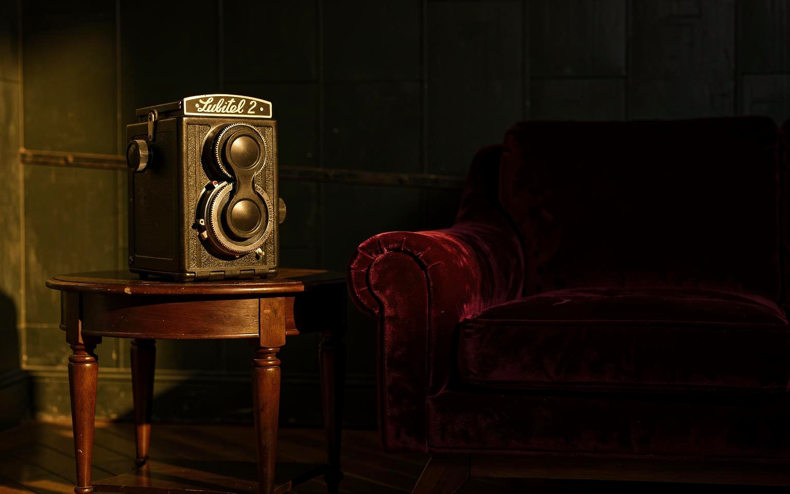

Lubitel 2
Fotoğraf & Sinema
← Koleksiyona dönİki objektif, kare bir görüntü ve kadraja daha yavaş yaklaşma daveti.
Lubitel 2, çift objektifli refleks düzeniyle fotoğrafı alışılmış göz hizasından farklı bir bakışa açıyor. Science Museum Group, modeli 120 rulo film kullanan ve kare görüntü oluşturan Sovyet yapımı bir fotoğraf makinesi olarak belgeliyor; koleksiyonundaki 1975 tarihli örnek, modelin 1970’lerdeki varlığını gösteriyor. Üst üste yerleşen iki objektif ve kompakt gövde, görüntüyü görmekle kaydetmek arasındaki ayrımı görünür kılıyor ve kadraja daha yavaş yaklaşmaya davet ediyor.